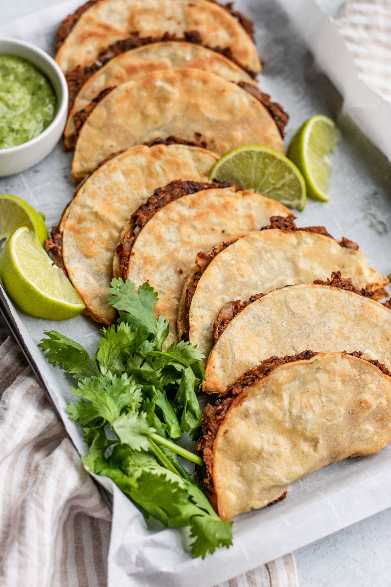

Tacos

These tacos from plant based rd are a lifesaver. This is a super tasty, super easy struggle meal. When the week has you down, these tacos will pick you back up.
PlantBasedRd Link
Ingredients
- garlic cloves, powder, or paste, to taste
- Half an onion finely chopped
- 1 tsp smoked paprika
- .5 tsp coriandar, oregano, thyme
- 2 regular cans of black beans (15oz)
- 2 chipotle peppers (can omit)
- .5 cup vegetable broth
- 8 corn tortillas
- frying oil as needed (olive/avocado/etc)
- Preheat oven to 425F. To a large rimmed baking sheet, drizzle about 2 tablespoons of oil and brush to evenly coat.
- Heat up a medium sized sauté pan over medium heat and add 1 tablespoon of oil to the pan to warm through. Add the onions along with a pinch of salt and sauté until softened. Stir in the garlic, sauteing until fragrant.
- Sprinkle in the paprika, coriander, oregano, and thyme and stir to combine. Add in the black beans and chipotle peppers and continue to sauté for 2-3 minutes.
- Pour in the vegetable broth and with a potato masher or the back of a large cooking spoon, lightly mash your beans until the mixture starts to bind together then remove from heat. If the mixture is loose, cook for an extra 2-3 minutes and allow to sit for a few minutes to thicken. Adjust salt and pepper to taste.
- Wrap the stack of tortillas in a damp paper towel and microwave for 15-30 seconds to steam them. Take each taco and place on the greased baking sheet, giving a flip to coat both sides in oil. To each tortilla, spread about 2-3 tablespoons of the mashed black beans over half a tortilla and fold it over. To make sure your taco stays closed after folding, carefully flip the taco over so the filling placed on the bottom of the taco is weighing down on the other side.
- Arrange the folded tortillas on the greased baking sheet in a single layer with space between the tacos. Place in the oven to bake for 8 minutes, then carefully flip the tacos and bake for an additional 8-10 minutes until nice and golden. Remove from the oven and allow to cool for 3-5 minutes to allow them to crisp up more and enjoy served with extra lime and salsas of choice.